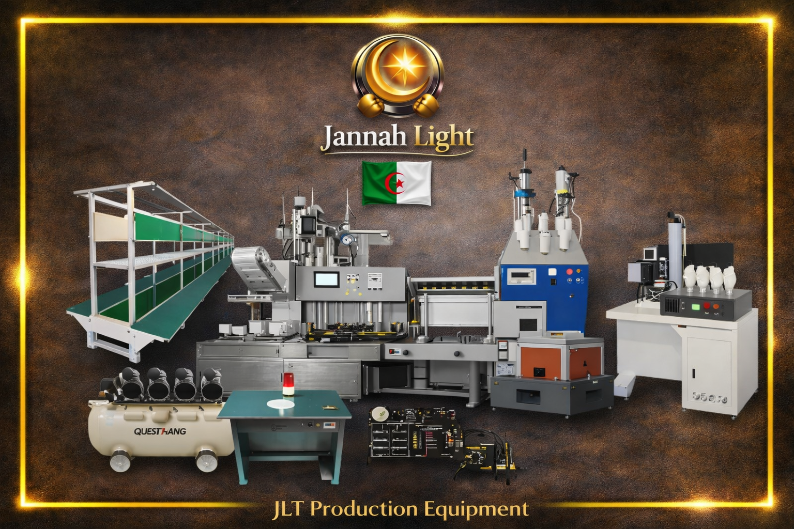
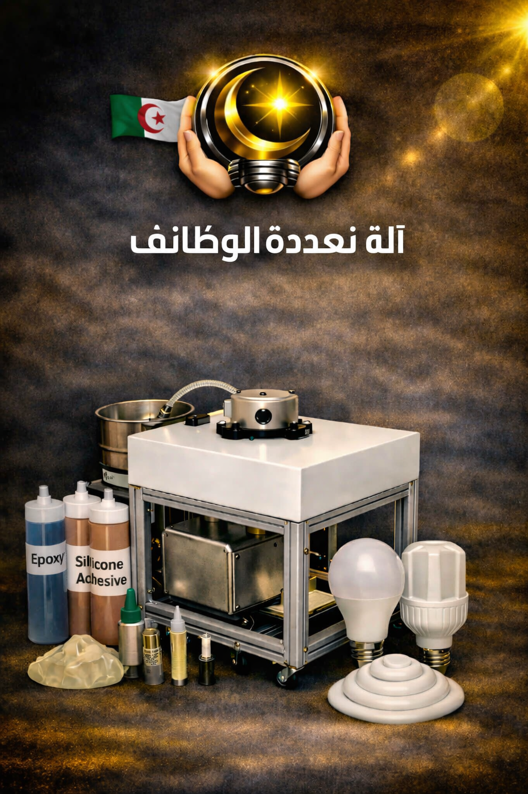

Jannah Light – Innovation et Lumière

تستعرض هذه الصفحة قائمة الآلات والمعدات التقنية المعتمدة لمشروع "جَنَّة لايت". تم اختيار هذه التجهيزات بعناية لضمان دقة الإنتاج، بدءاً من آلات الكبس والتجميع وصولاً إلى أجهزة الاختبار واللحام. تتضمن المواصفات الفنية المرفقة تفاصيل الوظائف الأساسية، الأسعار التقديرية، والملحقات التقنية اللازمة لضمان سير العملية الإنتاجية.

Pressing + Assembly + Testing
تقوم بالعمليات الأساسية للكبس لتثبيت القاعدة والمسامير، والتجمع الميكانيكي للأجزاء، مع إجراء اختبار أولي لضمان عمل المصباح بكفاءة عالية.
مخصص للحام القصدير للوحات الإلكترونية الدقيقة (PCB) بدقة عالية وتغطيس أطراف المكونات والأسلاك لضمان توصيل كهربائي مثالي ومقاومة عالية للتآكل.
آلة نصف أوتوماتيكية مخصصة لتوزيع المعجون والغراء بدقة عالية على جسم المصباح وتثبيت الغطاء لمنع دخول الهواء أو الرطوبة، بقدرة إنتاجية عالية.
تستخدم للضغط وتجميع أجزاء المصباح وتثبيت القاعدة والمكونات المعدنية بدقة وسرعة بفضل نظام العمل بالهواء المضغوط المعتمد في الورشة.
تستخدم في مرحلة ما بعد التجميع لقياس الجهد والتيار واستهلاك الطاقة وطباعة الشعار، رقم المنتج، ورمز التتبع بدقة لمنع التقليد وضمان الجودة.
تتميز بمحرك قوي ونظام متكامل لتجميع الغبار لشفط الفضلات، مخصصة لإزالة الزوائد المعدنية وبقايا القصدير وتشطيب البطاقات الإلكترونية بكفاءة وحماية العمال.